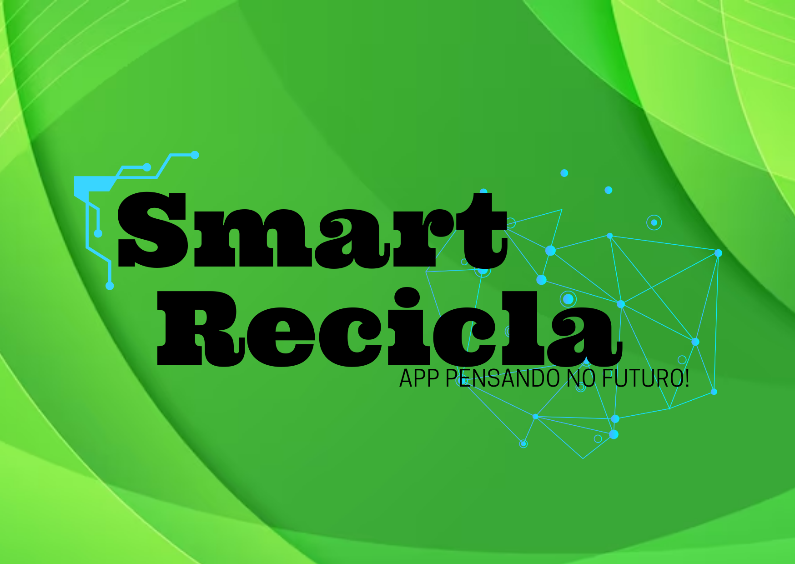
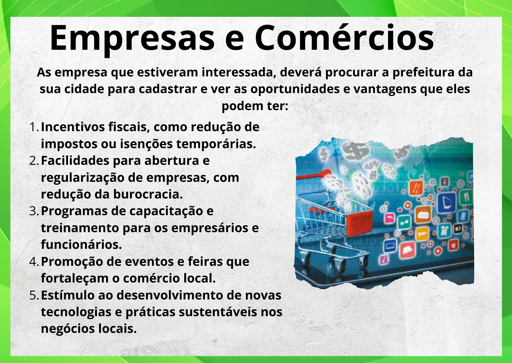
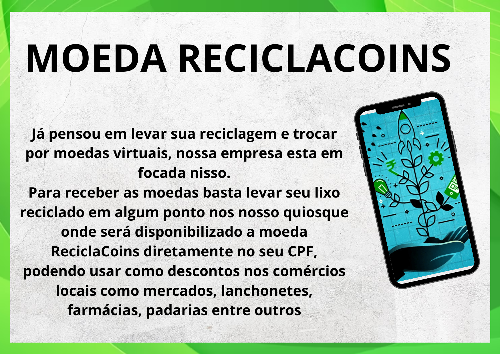
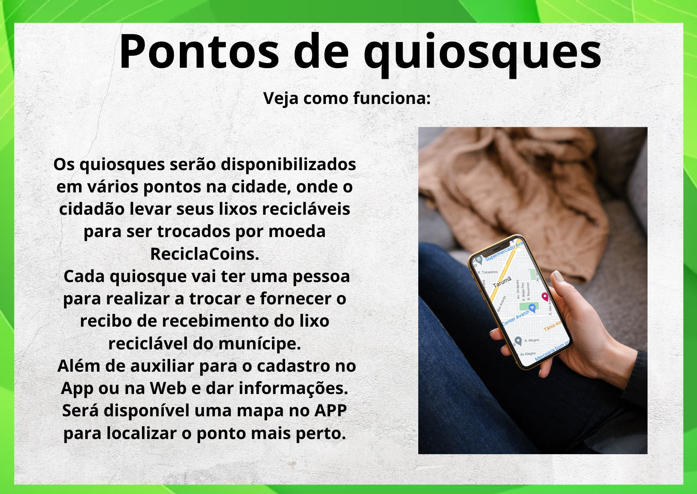

---Nossa Equipe---
Maria Cristina de Oliveira
Cursando graduação na Uningá - Sistema de Internet
Danila Aparecida Oliveira
Cursando graduação na Unicesumar - Engenharia de Software.
Erica Rosa Negrini de Andrade
Graduação na Estácio de Sá - Analise e Desenvolvimento de Sistemas
Cursando graduação na Unicesumar - Engenharia de Software
Cursando pós-graduação em Python.